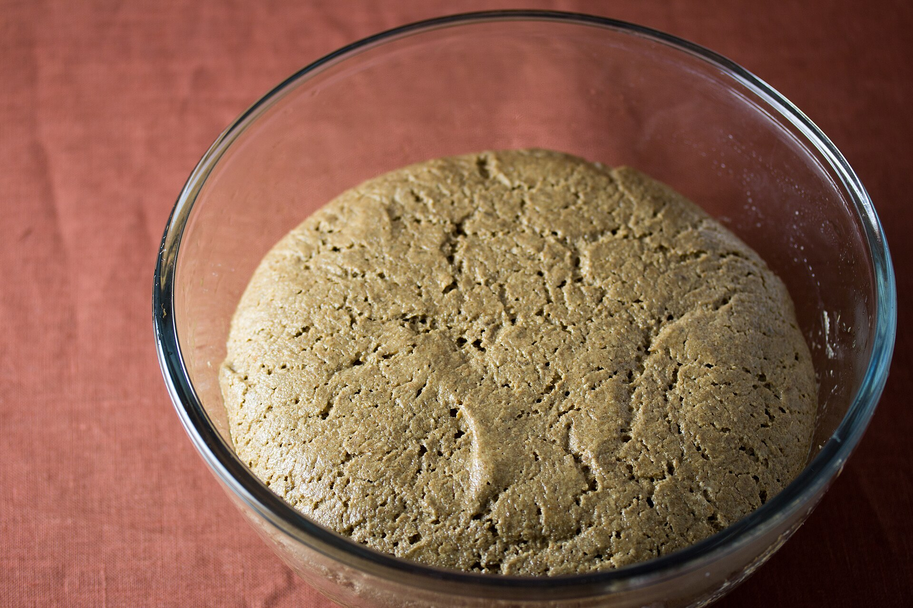
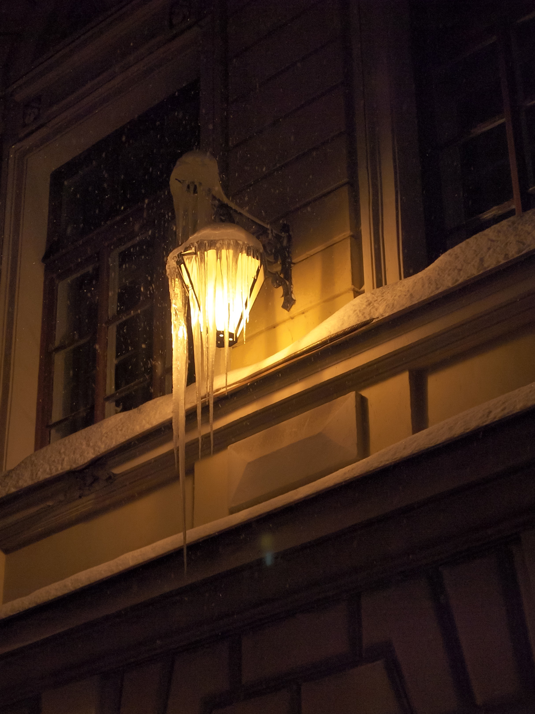
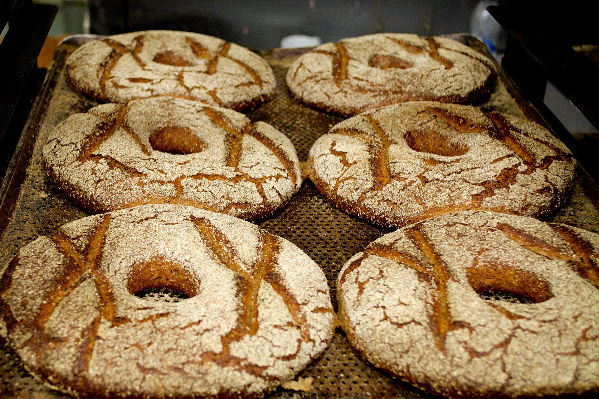
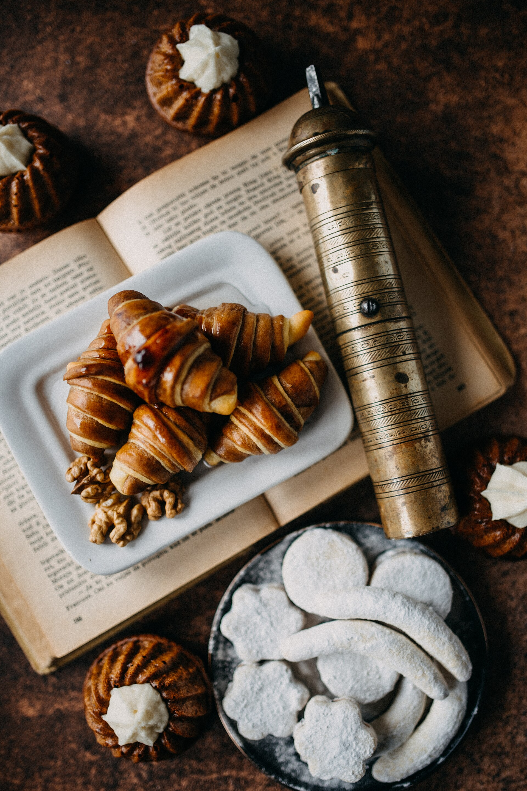
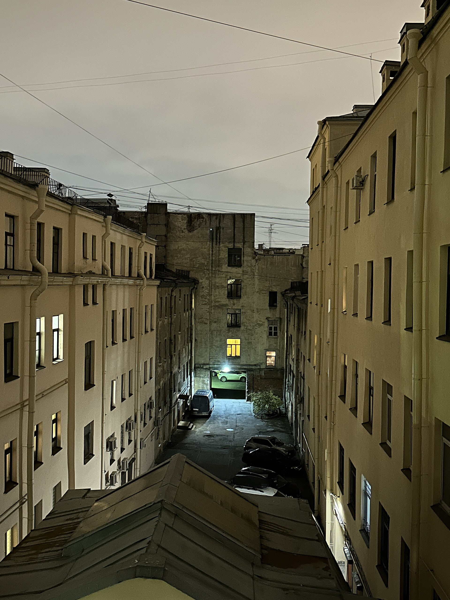
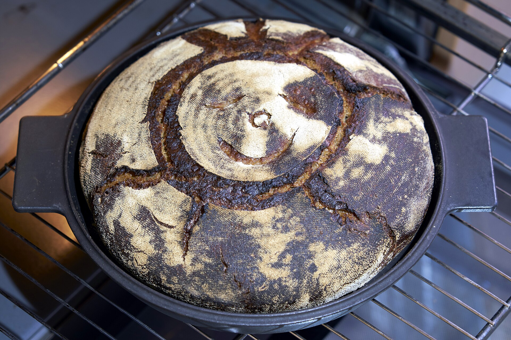
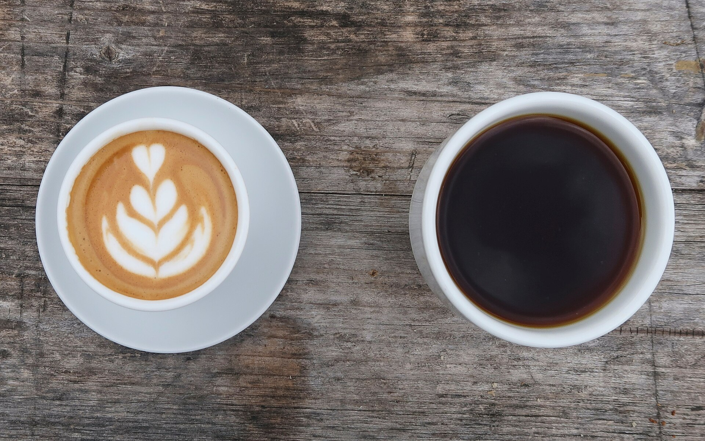
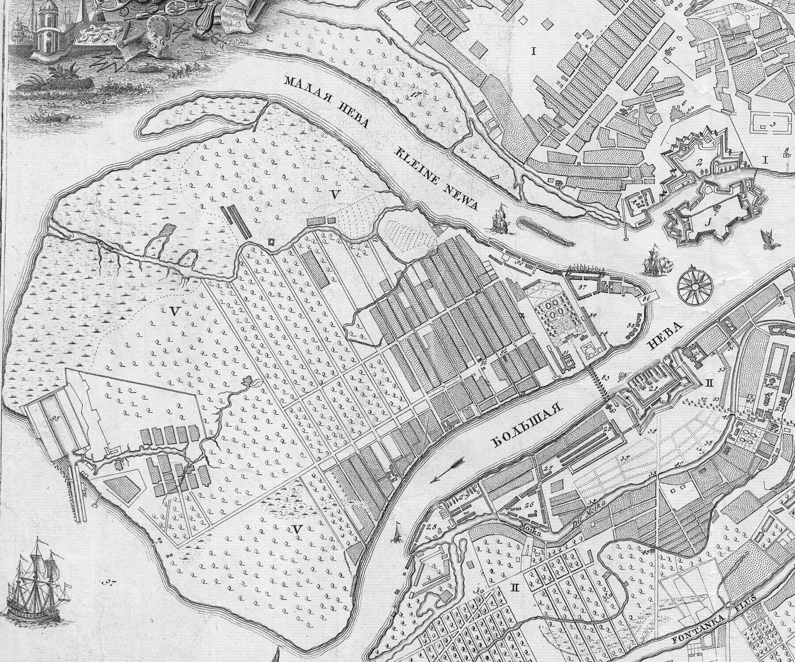

Кормим
В десять вечера кормим закваску ржаной мукой и водой. До утра она набирает силу, дрожжей мы не добавляем.

Пекарня на углу 8-й линии и Среднего проспекта. Печём с шести утра: хлеб на закваске, круассаны, кофе с собой.
Печь затапливаем в 06:00. Двери открываем в 07:00 с первым пшеничным. Круассаны выходят в 07:30, ржаной в 08:00.
Всё меню с ценами и временем выпечкиПока остров спит, на углу уже горит печь: в семь выходит хлеб, в половине восьмого круассаны, к восьми очередь за кофе с собой.


С октября по март на Васильевском светает после девяти. Наше окно на углу горит с шести, и к нему идут первые прохожие с линий.

В десять вечера кормим закваску ржаной мукой и водой. До утра она набирает силу, дрожжей мы не добавляем.

В три ночи, когда во дворах темно, замешиваем тесто: мука, вода, соль и закваска. Больше ничего.
Тесто растёт 3 часа. За окном снег под фонарём и первый трамвай по Среднему.

В шесть затапливаем печь. Первый хлеб выходит в семь, круассаны в половине восьмого.

Кофе варим с семи до девяти вечера, в стакан с крышкой. Со своей кружкой на 20 ₽ дешевле.
Угловой дом на 8-й линии у Среднего проспекта, вход с линии. От метро «Василеостровская» 6 минут пешком.

+7 812 000-00-00
Санкт-Петербург, Васильевский остров
Каравай к субботе или 30 круассанов на утро:
hello@teplyugol.ru